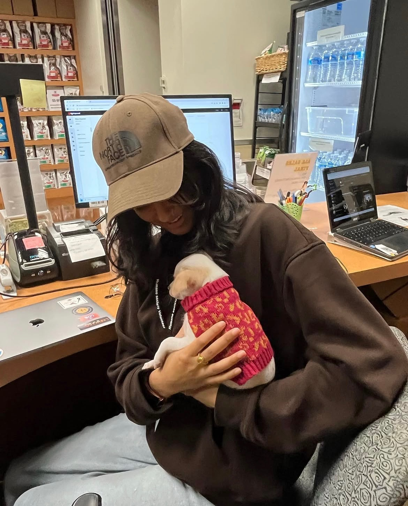
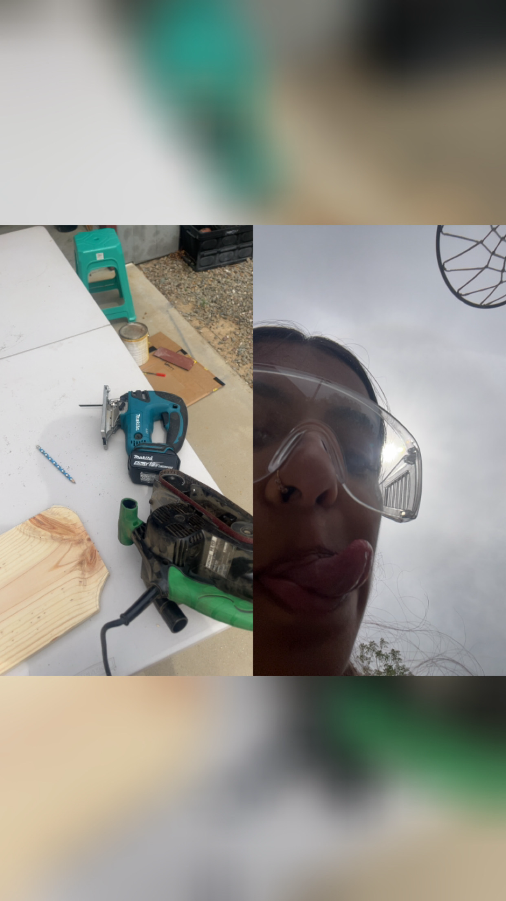

Mira Baya
Current Status: Optimizing the planet.
I’ve traded traditional career goals for a more ambitious KPI: 100% global sovereignty. My approach to world domination is data-driven, relentless, and surprisingly sustainable. I’m here to disrupt the status quo, dismantle the mundane, and install myself as the benevolent (if slightly dramatic) ruler of Earth.
Why settle for a seat at the table when you can own the room, the building, and the continent? Enjoy following the journey!
Lack of Experience
Choreography Captain & Production Intern
• Designed and managed production elements including set design, backdrops, lighting, props, and stage layouts to align with competition themes
• As Choreography Captain, lead and motivate a team of dancers to execute complex choreographies with precision and creativity
• Manage timelines, rehearsals, and choreography development while fostering a supportive, inclusive team environment
Store Associate/ Cashier
• Provided personalized customer service by assisting visitors in selecting pet care products tailored to their adoption needs
• Processed cash and credit card transactions efficiently using point-of-sale (POS) systems, maintaining a high level of accuracy
• Collaborated with adoption counselors and other staff to support a seamless and compassionate adoption process
BIOLOGY 20: Dynamic Genome
• Conducted molecular genetics and bioinformatics experiments related to gene expression
• Performed PCR, DNA extraction, and gel electrophoresis to manipulate and analyze genetic material
• Analyzed DNA sequencing data and interpreted results using bioinformatics tools
• Applied skills in experimental design, data collection, and scientific analysis
Education
not yet achieved
UC Riverside
Master of Entropy:
While others fear chaos, I have calculated it. I know exactly how much energy is required to turn a structured society into a state of maximum disorder—and more importantly, how to reverse it once I’m in charge.
Portfolio





